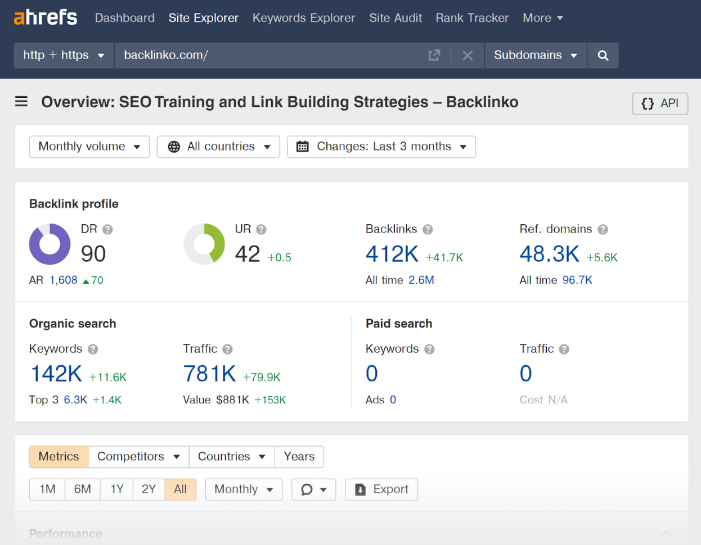

What is Ahrefs?
Ahrefs is a powerful SEO toolset used for keyword research, backlink analysis, competitor research, and website auditing. It helps website owners, marketers, and SEO professionals improve their search engine rankings by providing valuable insights into organic traffic, backlinks, keywords, and content performance.
We have different metrics in Ahref
Traffic (Organic Traffic)
Definition: Organic traffic refers to the number of visitors a website receives naturally from search engines like Google, Bing, and Yahoo without paid ads. These visitors find the website through search results after typing a query.
Why It Matters: Higher organic traffic means better SEO performance and rankings.

DR (Domain Ratings)
Definition: A score (0-100) that predicts how well a website will rank in search engines.
A metric (0-100) that shows the strength of a website.
Why It Matters: Higher DR = Better authority and higher ranking potential. Example:

Amazon.com has a DR of 96, meaning it has a very strong backlink profile. A new blog website might have a DR of 10, meaning it has a weak backlink profile.
SV (Search Volume)

Definition: The estimated number of times a keyword is searched per month.
Why It Matters: High SV keywords get more searches, meaning they have more traffic potential.
Example: Wireless mouse shown above 52,000 volume.
KD (Keyword Difficulty)

Definition: is a metric that indicates how hard it is to rank for a specific keyword in search engine results (SERPs). It is usually measured on a scale from 0 to 100, with higher numbers meaning greater difficulty.
Why It Matters: Helps in Keyword Research – Choosing low-KD keywords can help new websites rank faster. * Low KD (0-30) – Easy to rank. * Medium KD (31-70) – Moderate difficulty. * High KD (71-100) – Hard to rank without strong SEO.
UR (URL Rating)

Definition: A score (0-100) that measures the strength of a specific webpage.
Why It Matters: Higher UR means a stronger page, which helps in rankings.
Example: A blog post with high-quality backlinks from authoritative websites will have a higher UR, helping it rank higher on Google.
Referring Domains (RD)

Definition: A referring domain is a unique website that contains one or more backlinks pointing to another website. It represents the number of different websites linking to your site, rather than the total number of backlinks.
Why It Matters: More high-quality referring domains boost rankings.
Example: If 10 different websites each link to your blog, you have 10 referring domains, even if they link multiple times.
Backlinks

Definition: The number of incoming links from other websites to yours.
Why It Matters: Quality backlinks improve SEO authority and rankings.
| Term | Meaning |
|---|---|
DA (Domain Authority) |
Estimated organic visitors per month |
Traffic |
Moz's ranking score (0-100) predicting a website's ranking ability. |
SV (Search Volume) |
Improving site performance |
KD (Keyword Difficulty) |
Number of searches for a keyword per month |
UR (URL Rating) |
Strength of a specific page's backlink profile. |
Referring Domains |
The number of unique websites linking to a domain/page. |
Backlinks |
The number of inbound links to a site/page. |
How Long Does It Take to Succeed in SEO?
SEO success depends on multiple factors, including your strategy, competition, and consistency.
Factors That Affect SEO Success:
Strategy – A well-planned SEO strategy speeds up results. Competition – High-competition industries take longer to rank. Content Quality – Well-optimized, valuable content ranks faster. Backlinks & Authority – More high-quality backlinks = faster growth. Technical SEO – A well-structured website improves ranking speed.
Conclusion:
SEO is a long-term investment, and success depends on how effectively you implement your strategy. The better your approach, the faster your results.
https://docs.google.com/document/d/1qcjVnIRGiLx-Hl2ACoMl7WctYF5uHU6ApriZyl5KG6w/edit?tab=t.0#heading=h.8lt8s7ib64hy